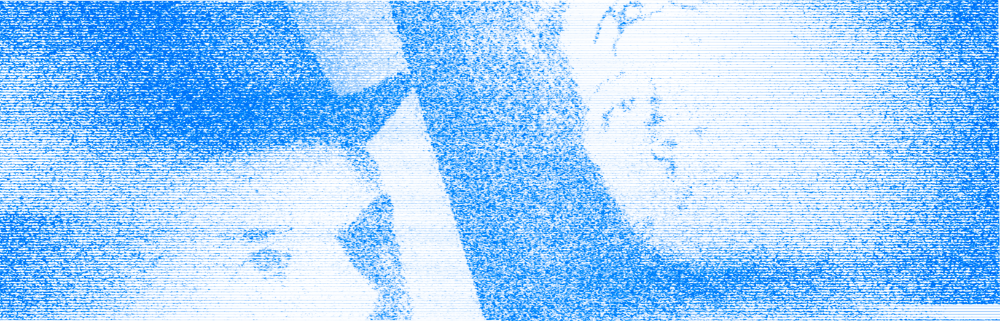

Учебник • Часть 1 • Введение • Что такое зин и зачем он нужен бизнесу
Введение
Что такое зин и зачем он нужен бизнесу


2 минуты на изучение
Мы рассмотрим историю зинов и их эволюцию, от самиздата и андеграунда до современного творческого инструмента. Ты узнаешь, почему зины стали популярными среди художников, писателей и бизнесов, и как они могут использоваться для построения бренда. А также расскажем, в чём ценность зинов и как их применять в своём бизнесе.


Анна Хивренко
Книга эмоций
Valeria Trejo
THE DAILY DRIP - ZINE
Зины — это самодельные журналы или брошюры, которые создаются вручную и издаются небольшими тиражами. Этот формат возник в середине XX века и получил широкую популярность среди независимых художников, музыкантов и активистов. Первые зины были связаны с субкультурами, такими как панк и феминизм, которые использовали этот инструмент для распространения своих идей и борьбы с цензурой. Например, в 1970-х годах панк-зин “Sniffin Glue” сыграл важную роль в популяризации панк-рока, распространяя новости о концертных выступлениях и рассказывая о политических проблемах.

Выпуски панк-зина “Sniffin Glue”
1977
Со временем зины стали более разнообразными по содержанию и форме. Теперь это не только альтернатива традиционным СМИ, но и способ креативного самовыражения. Многие художники используют зины для создания оригинальных проектов, в которых они могут экспериментировать с визуальными стилями и текстами. Например, графический дизайнер Дэвид Карсон выпускал журналы, где исследовал новые подходы к типографике и дизайну. Такой формат позволял ему экспериментировать с макетом и визуальным восприятием, не ограничиваясь рамками коммерческого дизайна.

Выпуски журнала “Ray Gun”
1992-2000
Сегодня зины также находят применение в бизнесе, поскольку они позволяют брендам делиться историями и идеями, не прибегая к традиционной рекламе. Например, косметическая компания Aesop выпустила зин “The Fabulist”, в котором опубликовала короткие эссе, рассказы и стихи, отражающие философию бренда. Это помогает создавать уникальный контент, который привлекает внимание аудитории и вызывает эмоциональный отклик. Аналогично, бренд одежды для активного отдыха Patagonia использует зины для продвижения идей о защите природы, привлекая внимание к экологическим проблемам.


Продукция Aesop
2019
Серия зинов “The Fabulist”
2020
Таким образом, зины могут быть мощным инструментом маркетинга, который позволяет донести до аудитории не только рекламные сообщения, но и ценности, идеологию и уникальные аспекты бренда. Этот формат помогает бизнесам выйти за пределы стандартных рекламных подходов и создать более искреннюю связь с аудиторией. Зины можно использовать для запуска новых продуктов, представления проектов, культурных инициатив или просто для привлечения внимания к важным темам.
Задание
Найдите и посмотрите примеры зинов в интернете, изучите их оформление. Соберите подборку зинов, которые вам
понравились.
Результат — рефборд из 5-10 зинов в Photoshop или Canva.
Обсудить в Telegram
Зины — это больше, чем просто печатные материалы. Они позволяют творческим людям и бизнесам выразить свои идеи и ценности через уникальный визуальный стиль. В следующем уроке мы погрузимся в тему личного бренда, чтобы понять, как он может быть связан с зинами и креативными проектами.